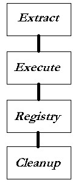

- EXTRACT - The Extract phase begins by first determining what kind of SETUP is being invoked, either a CD ROM, diskette, CD ROM with 'diskette images', or a self-extracting executable file. In the latter case, SETUP extracts the SETUP.INF, SFTCAB.1 'cabinet' file, and the optional LICENSE.TXT and places them in a temporary directory. SETUP then reads the SETUP.INF file, and displays the 'welcome' dialog box and optional license screen. SETUP then prompts for paths and options, and begins extracting and copying files into the appropriate directories, based on the contents of the SETUP.INF file.
Additionally, SETUP places the 'UNINST.EXE' and 'SETUP.INF' files in a directory off of the 'UNINST' sub-directory where the application is being installed that is derived from the application name (for more information, see 'uninst' under 'Specifying Pathsspecifying_paths'). For a self-extracting SETUP executable file, 'UNINST.EXE' is compressed within the cabinet file. For all others, it is located on the Disk #1 image in uncompressed form so that the user may still uninstall the application without first installing it, in case UNINSTAL.EXE was inadvertently deleted.
If SETUP finds a newer version of a file already installed on the user's machine, it will prompt the user whether to KEEP the existing (newer) file (default is YES for KEEP the newer file), unless the file has been marked "overwrite always". SETUP uses two methods to determine if a file is newer. The first method is for executable files, and involves the 'VERSION' information in the resource section of the file. The second method works for all remaining files, including executables with the same version but different binary contents, and compares the newer of the create date and 'last modify' date of the existing file to the date/time of the file to be installed. If a newer file is on the SETUP disk (or self-extracting SETUP executable) the newer one is automatically copied without any prompting. However, if the file simply matches but has a different date, no copy is performed, and the original date/time remains as-is.
NOTE: If a previous installation was performed that requires a system re-boot, and a shared system file (or other file) was specified as "rename after reboot" or "delete after reboot", SETUP will detect this and attempt to compare any NEW files against the file it is trying to install. This is important for applications that contain embedded setups with shared components. In short, if a previous SETUP has installed a NEWER version of a file, and the file was 'in use' (so that the file can only be copied on reboot), subsequent or embedded setups that were created using the S.F.T. Setup Gizmo will detect this and NOT attempt to overwrite the newer file with an older one during the 'rename after reboot' process. Normally you should NOT rely on this feature, and instead should install ALL shared components "up front", and then re-write any embedded setups to rely on this. But, if the embedded setup was created by a 3rd party, SETUP allows you to install that one FIRST, then install your own shared components afterwards without re-booting first.
- EXECUTE - The Execute phase begins when all files have been extracted into their target directories. First, all of the DLL's marked "Register" are registered by calling 'DllRegisterServer()' in each of them, so that subsequent executables may use their features immediately afterwards. Next, all of the programs marked "Execute on Extract" are executed with the specified command line. This allows you to write an application that behaves differently during SETUP, such as an OLE Automation server that merely registers itself and immediately exits when "/SETUP" is on the command line.
Typically, you would use this capability to register in-place OLE/Automation servers and ActiveX "custom controls", and to execute embedded self-extracting SETUP applications.
NOTE: Whenever a file has been marked "shared/system", and SETUP detects that a reboot will be required, the 'Register' and 'execute' operations will be delayed until after you re-start the system, by using the 'RunOnce\SETUP' registry key. As a result, 'delete after exec' for shared components is invalid.
- REGISTRY - The Registry phase begins by adding all of the registry entries specified in SETUP.INF, then registers the "system/shared" components by adding a new entry or incrementing the reference count, and finally registers 'UNINSTAL.EXE' as the uninstall utility for this application.
After successfully updating the registry, SETUP prompts you whether you want to add a new folder to your START MENU. On Windows NT, you can optionally select "All Users", and the folder will appear as a menu selection in the bottom portion of the 'Programs' menu for all users.
- CLEANUP - The final phase is the 'cleanup' operation. All files marked 'Delete After Exec' are deleted at this time, including those files saved in a temporary directory (which implies 'Delete After Exec'). For a self-extracting SETUP executable file, the SETUP.INF, SFTCAB.1, and optional LICENSE.TXT are deleted along with the temporary directory they were placed into (assuming it was empty to begin with).
If any shared files could not be updated because they were "in use" at the time (a possible condition) then SETUP will inform the user that he must re-boot his system, and offer the opportunity to re-boot at that time. Although it is possible that an NT system may not allow the user to re-boot the machine, it is still important to do so after running SETUP before running any applications that might use these shared components.
Following a re-boot, the appropriate shared files will be updated automatically during startup.
|
 |